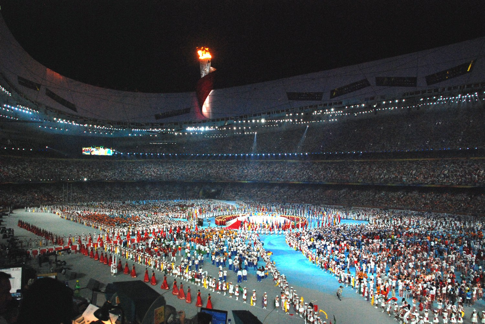
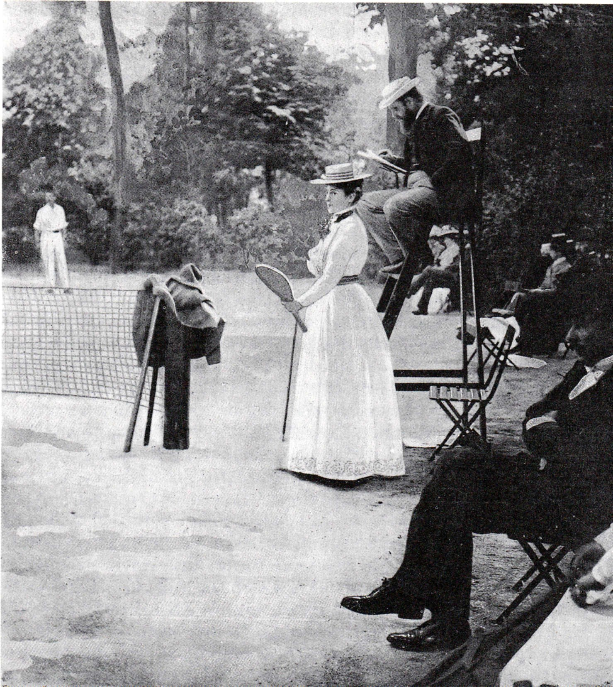
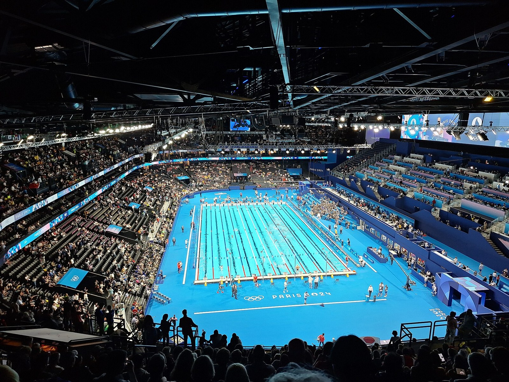
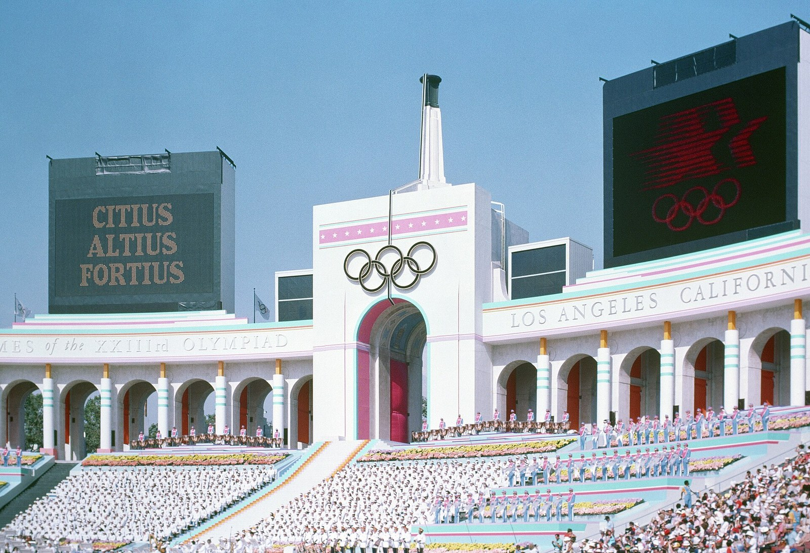

01 / 11开幕与主场
Birdsclosing.jpg
- 摄影 / 来源署名
- Jmex60
- 许可
- CC BY-SA 3.0
- 本地文件
- host.jpg · 1500 × 1004
这里列出作品使用的 11 张本地照片、原始页面、作者和许可。照片帮助读者进入历史场景，不参与排名计算，也不充当统计结论的证据。
离线打开各专题时，图片从同目录读取。需核对许可细节时，请点击每张卡片的 Commons 原始页面。

01 / 11 02 / 11
02 / 11 03 / 11
03 / 11 04 / 11
04 / 11 05 / 11
05 / 11 06 / 11
06 / 11 07 / 11
07 / 11
08 / 11 09 / 11
09 / 11
10 / 11
11 / 11